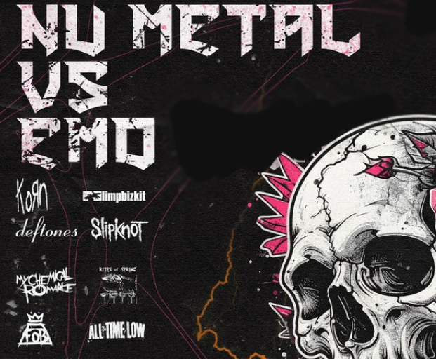
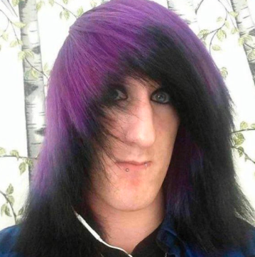

Roots & Origins
Emo first developed in Washington D.C in the 1980s, born out of the city's hardcore punk scene where it was known as emotional hardcore or emocore Nu metal appeared in the 90s with groups like Korn of Deftones. It mixes electronic sounds, sometimes DJ mixing, thrash vocals with a phrasing borrowed from hip-hop Emo began in Washington, D.C., in the middle of the 1980s as a more melodic and emotional development of hardcore punk.
When metal bands started fusing heavy guitar riffs with hip-hop rhythms, electronic components, and alternative rock influences in the early to mid-1990s, nu metal also began to take shape.
Young people's frustration, identity exploration, and need to express feelings that traditional rock and metal typically disapproved of gave rise to both genres.
Dark eyeliner, band T-shirts, and side-swept or layered hair are all common components of an emo look.
Baggier clothing, hoodies, and occasionally more industrial or gothic elements are all part of the nu metal aesthetic.
All things considered, both aesthetics use clothing as a means of expressing emotion, either as a visual representation of inner feelings or as a form of rebellion.

Music
Entire generations have been influenced by bands like Korn, Linkin Park, Slipknot (nu metal), Fall Out Boy, Finch (emo), and My Chemical Romance. Their influence stems from how candidly they discussed vulnerability, anger, and mental health. Intensity, emotional transparency, and a close bond between performers and fans are common characteristics.
Important People
Gerard Way is a defining figure in emo because he helped bring the genre's theatrical, emotional storytelling into the mainstream. As the frontman of My Chemical Romance, his dramatic vocals, vivid narratives, and bold aesthetic pushed emo beyond a sound into a full cultural movement.
His deeply personal lyrics and strong creative vision helped shape Fall Out Boy's signature sound. As the band's primary songwriter and a highly visible personality in the scene, he brought emotional honesty, sharp wordplay, and cultural influence that helped push emo into mainstream popularity.
Impact on the world & evolution throughout the years
By normalizing emotional honesty in music, emo and nu metal both changed the culture of young people.
They had an impact on mental health awareness, fashion, online culture (particularly internet identities from the MySpace era), and genre blending. They also made it possible for upcoming musicians to talk openly about private matters, and they still serve as an inspiration for emerging trends in fashion, music, and online communities.
Both styles are currently experiencing comeback tours, TikTok trends, nostalgia-driven revivals, and new bands embracing their emotional intensity. Since these genres are honest and relatable, modern youth frequently return to them, demonstrating that the essence of nu metal and emo is still present.
Stereotypes & Misconceptions
The emo subculture is stereotypically associated with emotion, sensitivity, misanthropy, shyness, introversion and angst, as well as depression.
Nu metal fans are often stereotyped as angry or immature.
Stereotypes oversimplify diverse, complex communities that are centered on solidarity and creativity.

Got everything? Ready to test your knowledge?
Begin Quizz